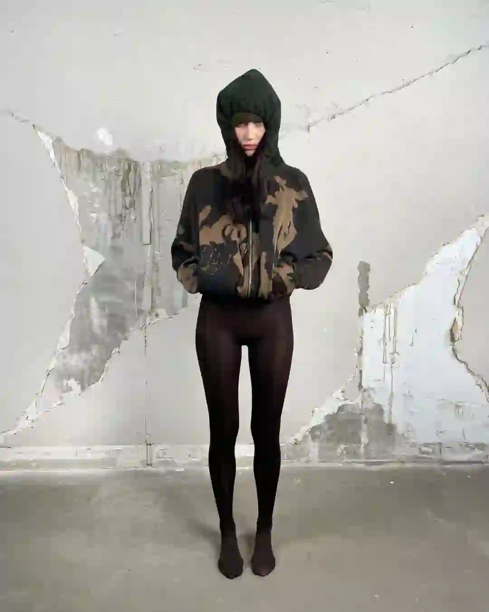
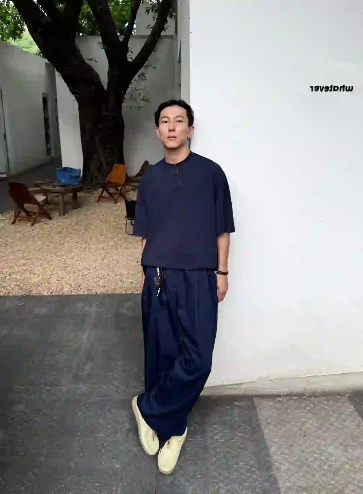
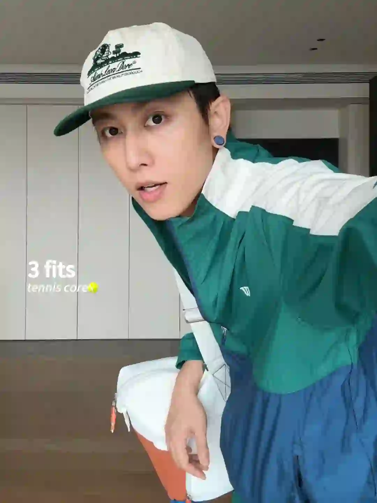
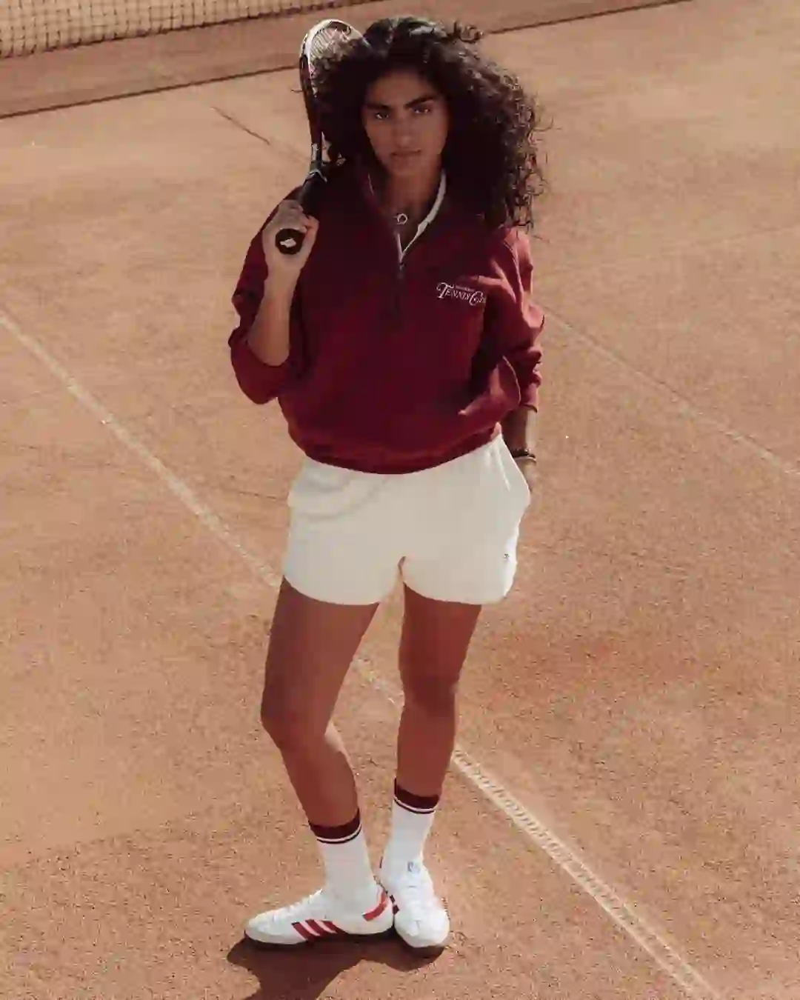
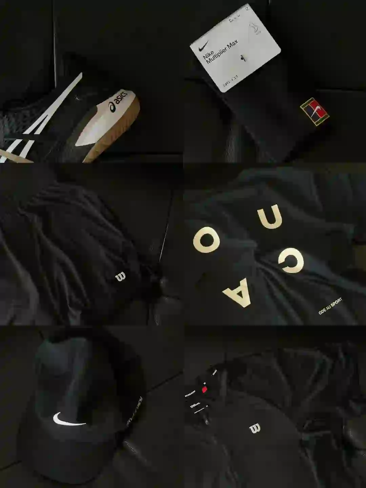

2026年5月12日
05月12日报告
生成时间：2026-05-12 · 范围：时尚 / 穿搭 / 网球
今日参考账号：陈赫 / Nina.pdf / 负像之诗
今日高信号标题：时尚这一块 安姐有自己的见解 ｜ Solutions Camouflage Collection Lookbook ｜ 100位宝藏摄影大师 | jorgemchagas
竞品策略变化：未命中监控竞品样本
今日高信号标题：时尚这一块 安姐有自己的见解 ｜ Solutions Camouflage Collection Lookbook ｜ 100位宝藏摄影大师 | jorgemchagas
竞品策略变化：未命中监控竞品样本
时尚 · 01
时尚这一块 安姐有自己的见解
⭐ 1755
👍 31946
今天可学
- 内容结构：未判定 + 0图，更像单点表达
- 点赞高于收藏，偏流量型曝光内容，不值得原样照抄
- 正文入口：（正文为空或未取到）

时尚 · 02
Solutions Camouflage Collection Lookbook
⭐ 1077
👍 3787
今天可学
- 内容结构：人物 + 9图，更像资料型合集
- 收藏效率高，说明用户把它当成可复用模板/知识卡，不只是刷到即过
- 正文入口：- Solutions Camouflage Collection Lookbook
- 标签聚焦：#solutions / #设计灵感 / #摄影灵感 / #亚文化
时尚 · 03
100位宝藏摄影大师 | jorgemchagas
⭐ 972
👍 4003
今天可学
- 内容结构：人物 + 4图，更像单点表达
- 收藏效率高，说明用户把它当成可复用模板/知识卡，不只是刷到即过
- 评论活跃，适合加入观点冲突、对比案例或常见误区来拉讨论
- 正文入口：英国摄影师📷jorgemchagas jorgemchagas以极简光影与剪影构建城市叙事，车站、街头的孤独身影与建筑线条交织，动态模糊与反射构图传递静谧哲思。 “在流动的瞬间里，…
- 标签聚焦：#拍出电影感 / #一张照片高级感 / #笔记灵感 / #人文扫街
时尚 · 04
40+男人的终极指标，拿捏好高级感
⭐ 851
👍 1248
今天可学
- 内容结构：未判定 + 4图，更像单点表达
- 收藏效率高，说明用户把它当成可复用模板/知识卡，不只是刷到即过
- 评论活跃，适合加入观点冲突、对比案例或常见误区来拉讨论
- 标签聚焦：#英伦风 / #男士穿搭技巧 / #男士穿搭 / #绅士的品格

时尚 · 05
上海秋冬男士街拍年度18图（秋冬篇）
⭐ 628
👍 2834
今天可学
- 内容结构：人物 + 18图，更像资料型合集
- 收藏效率高，说明用户把它当成可复用模板/知识卡，不只是刷到即过
- 评论活跃，适合加入观点冲突、对比案例或常见误区来拉讨论
- 标签聚焦：#城市氛围感穿搭 / #ootd每日穿搭 / #上海街拍 / #街拍穿搭
时尚赛道今日方法论
- 样本依据：Solutions Camouflage Collection Lookbook / 100位宝藏摄影大师 | jorgemchagas
- 当天结构信号：人物封面 + 4图 最强；优先学习样本 4 条，低收藏流量样本 1 条。
- 时尚赛道今天跑出来的是“审美判断 + 资料感整理”：像 40+男人的终极指标，拿捏好高级感 这类高收藏样本，核心不是讲步骤，而是把趋势、风格线索和案例并排给足，用户才愿意以 68.2% 的收藏率反复回看。
- 执行建议：标题先抛出趋势/风格判断，再给明确收益；正文少讲空泛氛围，多给风格标签、对照案例和可复看的视觉结论，让内容更像灵感资料卡。
- 反例提醒：时尚这一块 安姐有自己的见解 点赞高但收藏低，说明这类曝光型内容能带流量，不适合直接当明日主打法。
今日参考账号：GAYI今天穿什么 / 查理叔叔 / Ego
今日高信号标题：自带凌乱感的流浪绅士——Alon ｜ 👨🏻40+叔叔｜男士通勤穿搭🌪️灰裤子配雨天 ｜ 我喜欢的日系感觉
竞品策略变化：未命中监控竞品样本
今日高信号标题：自带凌乱感的流浪绅士——Alon ｜ 👨🏻40+叔叔｜男士通勤穿搭🌪️灰裤子配雨天 ｜ 我喜欢的日系感觉
竞品策略变化：未命中监控竞品样本

穿搭 · 01
自带凌乱感的流浪绅士——Alon
⭐ 2558
👍 5570
今天可学
- 内容结构：视频封面 + 视频，更像视频示范/单点表达
- 收藏效率高，说明用户把它当成可复用模板/知识卡，不只是刷到即过
- 正文入口：[扒底酷]系列：第十二期
- 标签聚焦：#ins博主推荐 / #ins博主穿搭 / #顶男创造营 / #男生穿搭
穿搭 · 02
👨🏻40+叔叔｜男士通勤穿搭🌪️灰裤子配雨天
⭐ 411
👍 714
今天可学
- 内容结构：人物 + 0图，更像单点表达
- 收藏效率高，说明用户把它当成可复用模板/知识卡，不只是刷到即过
- 评论活跃，适合加入观点冲突、对比案例或常见误区来拉讨论
- 正文入口：（正文为空或未取到）

穿搭 · 03
我喜欢的日系感觉
⭐ 367
👍 1521
今天可学
- 内容结构：人物 + 4图，更像单点表达
- 收藏效率高，说明用户把它当成可复用模板/知识卡，不只是刷到即过
- 评论活跃，适合加入观点冲突、对比案例或常见误区来拉讨论
- 标签聚焦：#日系穿搭 / #通勤穿搭 / #廓系穿搭 / #日常穿搭
穿搭 · 04
𝗝𝗼𝗻𝗮𝘁𝗵𝗮𝗻｜时尚博主这么搭
⭐ 100
👍 345
今天可学
- 内容结构：人物 + 4图，更像单点表达
- 收藏效率高，说明用户把它当成可复用模板/知识卡，不只是刷到即过
- 正文入口：𝗝𝗼𝗻𝗮𝘁𝗵𝗮𝗻 𝗵𝗮𝘆𝗱𝗲𝗻 Based in Paris 都进来学，时尚博主夏季日常这么搭! 时尚博主｜男生穿搭｜穿搭灵感 夏季穿搭｜极简穿搭｜OOTD
- 标签聚焦：#时尚博主都这么穿 / #男生穿搭 / #日常穿搭 / #极简穿搭
穿搭 · 05
杨祐宁的穿搭 值得每个男生抄作业
⭐ 91
👍 367
今天可学
- 内容结构：人物 + 0图，更像单点表达
- 收藏效率高，说明用户把它当成可复用模板/知识卡，不只是刷到即过
- 评论活跃，适合加入观点冲突、对比案例或常见误区来拉讨论
- 正文入口：（正文为空或未取到）
穿搭赛道今日方法论
- 样本依据：自带凌乱感的流浪绅士——Alon / 👨🏻40+叔叔｜男士通勤穿搭🌪️灰裤子配雨天
- 当天结构信号：人物封面 + 0图 最强；优先学习样本 5 条，低收藏流量样本 0 条。
- 穿搭赛道今天最有效的是“整套可抄作业方案”：高收藏样本 👨🏻40+叔叔｜男士通勤穿搭🌪️灰裤子配雨天 说明，只要场景清楚、look 数量够多、搭配结果一眼能看懂，就更容易拿到 57.6% 级别的收藏反馈。
- 执行建议：优先做通勤/职业/一周不重样/套装盘点这类清单式内容；封面先给完整上身结果，图组里再拆单品变化和搭配理由，不要只发单套氛围图。
今日参考账号：Takuya Komura 小村拓也 / wowfrank / 运动摄影师龚杰
今日高信号标题：attack tennis 🎾 ｜ 网球穿搭分享🎾 ｜ 运动审美分享 | 网球
竞品策略变化：未命中监控竞品样本
今日高信号标题：attack tennis 🎾 ｜ 网球穿搭分享🎾 ｜ 运动审美分享 | 网球
竞品策略变化：未命中监控竞品样本

网球 · 01
attack tennis 🎾
⭐ 974
👍 4458
今天可学
- 内容结构：视频封面 + 视频，更像视频示范/单点表达
- 收藏效率高，说明用户把它当成可复用模板/知识卡，不只是刷到即过
- 标签聚焦：#tennis / #rf / #テニス / #网球

网球 · 02
网球穿搭分享🎾
⭐ 712
👍 1802
今天可学
- 内容结构：视频封面 + 视频，更像视频示范/单点表达
- 收藏效率高，说明用户把它当成可复用模板/知识卡，不只是刷到即过
- 评论活跃，适合加入观点冲突、对比案例或常见误区来拉讨论
- 正文入口：穿着我的新衣服上课去了
- 标签聚焦：#ootd / #男生穿搭 / #网球穿搭

网球 · 03
运动审美分享 | 网球
⭐ 48
👍 63
今天可学
- 内容结构：文字卡 + 9图，更像资料型合集
- 收藏效率高，说明用户把它当成可复用模板/知识卡，不只是刷到即过
- 正文入口：一组网球图分享 拍摄不停，学习不止
- 标签聚焦：#运动摄影师龚杰 / #网球穿搭 / #网球
网球 · 04
我倒要看看40岁入坑网球 到底能学到啥水平
⭐ 230
👍 1797
今天可学
- 内容结构：未判定 + 4图，更像单点表达
- 收藏与点赞较平衡，可学选题包装，但仍需补强可执行细节
- 评论活跃，适合加入观点冲突、对比案例或常见误区来拉讨论
- 标签聚焦：#网球 / #网球尖子生 / #网球穿搭 / #网球训练

网球 · 05
🎾网球穿搭「第十三期」 黑武士
⭐ 173
👍 399
今天可学
- 内容结构：产品 + 4图，更像单点表达
- 收藏效率高，说明用户把它当成可复用模板/知识卡，不只是刷到即过
- 评论活跃，适合加入观点冲突、对比案例或常见误区来拉讨论
- 正文入口：今天是黑武士穿搭 上衣👕：wilson / oneup 短裤🩳：wilson 鞋子👟：asics 袜子🧦：nike 帽子🧢：nike
- 标签聚焦：#网球 / #网瘾是网球的网 / #佛山网球 / #广州网球
网球赛道今日方法论
- 样本依据：attack tennis 🎾 / 网球穿搭分享🎾
- 当天结构信号：视频封面封面 + 视频 最强；优先学习样本 4 条，低收藏流量样本 0 条。
- 网球赛道今天胜出的不是热闹球场感，而是“动作纠错/装备收益/新手可执行”：高收藏样本 运动审美分享 | 网球 证明，只要用户能马上拿去练，收藏率就能来到 76.2%。
- 执行建议：标题写清动作部位、错误修正或装备收益；内容里给慢动作、步骤和上场场景。明星/赛事样本只借包装，不把热点本身当方法论。
- 自动抽取规则：仅收录收藏率 >20% 且未被标记为 [不可复制] 的标题模板
- 写入目标：/Users/zhangxiaosong/shared/context/xhs-knowledge/topics/title-templates.md
- 把今天高收藏、高可复制的打法优先塞进明日发帖计划
- 竞品若连续两天从展示型转向教程/资料型，单独开策略变更记录
- 对被标注 [不可复制] 的样本，只拆结构，不抄流量来源